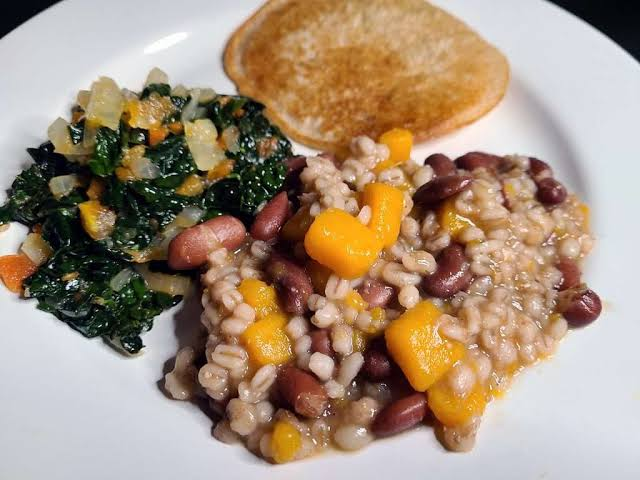
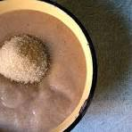
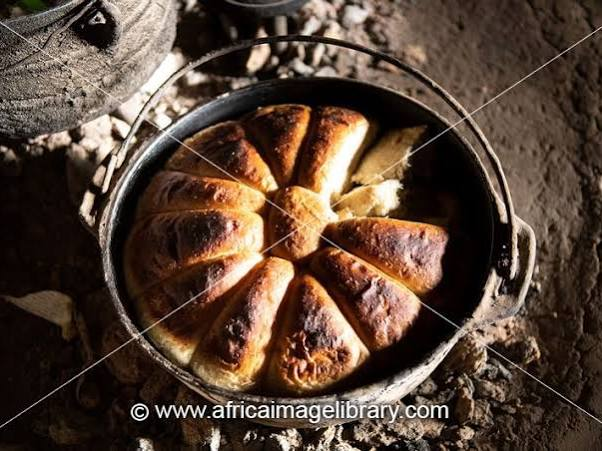

Maletsunyane Falls


| Seotho Food | Description | Image |
|---|---|---|
| Likhobe | A traditional, hearty Sesotho dish made by boiling whole dried maize (corn) kernels together with beans and sorghum or wheat until tender. It is seasoned simply with salt and served as a filling lunch or staple snack. | |
| Nyekoe | A rich, traditional one-pot dish cooked using sorghum, beans, and dried pumpkin, often simmered together over a slow fire. It has a slightly sweet and earthy flavor profile, historically prepared to celebrate harvests. |  |
| Motoho | A popular fermented sorghum porridge with a smooth texture and a signature tangy, sour taste. It is commonly enjoyed as a refreshing beverage or light meal during hot days and traditional gatherings. |  |
| Mala le Moholu | A classic Basotho comfort dish consisting of slow-cooked beef or sheep tripe (mohodu) and intestines (mala). It is simmered until tender in a well-seasoned, savory broth and traditionally served hot alongside papa. |  |
| Bohobe ba Lipoho / Likhoali | A staple Basotho steamed bread made from a simple dough of flour, water, yeast, and a touch of sugar. It is gently steamed inside a pot until soft and fluffy, making it an ideal side for beef stew or hot soups. |  |